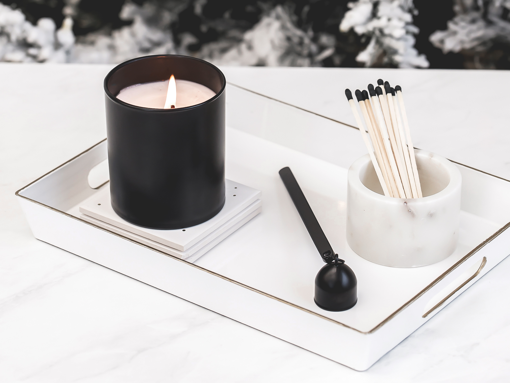

Join us at our FIRST annual Haute Holiday Market! Sip on a relaxing beverage
and shop local products created by some of the best and most talented Minnesota makers.
Jewelry, candles, decor, and more - we have it all.
Our studio space will be bedazzled with current, on-trend holiday designs you
can bring back to your own home.
Designer gift-wrapping also on location! You can avoid the stress and let our
pros handle the mess.
Leave feeling festive, inspired, and full of joy after experiencing this
new local event.

Wednesday, December 4, 2019
11AM-1PM
5:30PM-7:30PM
at Haute House Studio
Haute House Studio
Fresh florals, house-poured candles, and custom gift-wrapping.
Studio Mary Jane
Clutches, bucket bags, and totes. Designed with patterns to please anyone.
Num Nuts
Small-batch, delicious, paleo-friendly, vegan nuts and snacks.
Freak Flag Foods
Organic sauces to add to anything you eat.
Namakan Fur
Hats and puffs, ruffs, accessories, and more to bridge the gap between winter style and warmth.
Edina Spiritwear
Tees, hats, sweatshirts and more to support your local team.

Wednesday, December 11, 2019
11AM-1PM
5:30PM-7:30PM
at Haute House Studio
Haute House Studio
Fresh florals, house-poured candles, and custom gift-wrapping.
Jessica Matrasko Jewelry
Delicate and beautiful jewelry designed in Hollywood and brought to MN.
Freak Flag Foods
Organic sauces to add to anything you eat.
ALICE
Cross-body, bucket, and mini-chain bags designed with style in mind.
KT Design
Zip-its, totes, infinity scarves, cowls, and wristlets for everyone on your list.
Freak Flag Foods is an invitation to inspire imagination and creativity.
It's a rallying cry for anyone and everyone to express themselves by getting carried away in the kitchen.
In collaboration with veteran local chef Mary Jane Miller, who has crafted these delightfully unique and
full-flavored organic master sauces — the possibilities of what you can whip up are as easy as they are endless.
So, go on, and be yourself in the kitchen and in life. We can't wait to see what you cook up.
Jessica Matrasko Jewelry was established in 2007 with the
modern woman in mind. We think jewelry should be on trend, but never trendy, so we use organic
materials and high quality, hypoallergenic 14K gold filled metal. We want you to wear these styles
for years to come, and we encourage you to layer pieces, to mix and match and to create your own
favorite look, that evolves just as your personal style does.
KT Design has the perfect range of gifts for everyone on your list from
family to friends to teachers - even yourself! KT Design creates a variety of oilcloth zip-its, totes to plaid infinity scarves,
cowls, and wristlets for everyone on your list. Pair your cowl with a graphic tee for a complete look.
Brand new waxed canvas and leather handbags are making their debut this fall.
Namakan Fur
As born and bred Minnesotans, we know that with the right gear,
there’s no such thing as too cold. However, we’re often faced with the choice of looking great and
freezing, or staying warm in frumpy gear. Namakan bridges the gap between winter style and comfort,
from the head down with our faux fur ruffs that attach to any hood or collar, beanies, earmuffs,
mittens and more.
Num Nuts
Chika Griswold started Num Nuts in her Minnesota kitchen. Her passion for cooking
and love of simple, healthy foods led her to try roasting her own nuts at home. Over time, she developed a unique
recipe and roasting technique that delivered just the right amount of sweetness and saltiness and
allowed the delicious flavors of the nuts to shine through.
Why the name "Num Nuts"? Because num, num, num, num, num!
Studio Mary Jane
Mary Jane started her business with custom orders where she could work with clients
to create unique and one-of-kind bags. Her passion for fabrics of all colors, textures, and patterns is her
true inspiration. Mary Jane loves observing current fashion trends and working them into bags that people can
really use. All Studio Mary Jane bags are handmade and fully customizable!